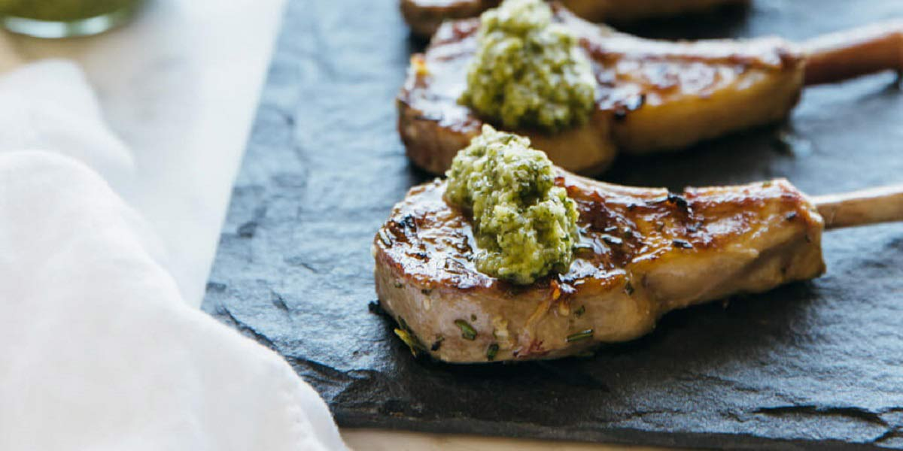

Grilled Lamb Chops
Recipe Specification
Ingredients List
| Ingredients | Quantity |
|---|---|
| Vegetable Oil | 30ml |
| Lamb Chops | 6x1 |
| Rosemary | 6g |
| Thyme | 6g |
| Cayenne Pepper | A Pinch |
| Maldon Sea Salt | 4g |
| Garlic Cloves | 3 cloves |
Yield: 4-6 portions
Preparation
- Pick and chop rosemary leaves.
- Pick and chop thyme leaves.
- Peel and crush garlic cloves.
- Place rosemary, thyme, garlic, cayenne pepper and salt in a pestle and mortar. Grind until paste is formed and add vegetable oil.
- Remove chops from refrigerator and bring to room temperature.
- Rub paste into chops on both sides.
Cooking Instructions
- Place a griddle pan on a medium/high heat.
- brush oil over the griddle pan and once oil starts to smoke, place chop on griddle.
- Sear first side for 2 minutes before flipping and cooking for 3-3½ minutes, depending on whether you want it medium-rare or medium. Leave to rest for 2 minutes before serving.

Serving Suggestions
Lamb chops are a great addition to a mixed grill platter and can also be served with roast potatoes, steam vegetables and gravy.
Storing instructions
Allow roasted leg of lamb to cool to room temperature before putting in an air-tight container and placing in the refrigerator. Consume within 4 days of making it
Reheating Instructions
Place in the microwave for 2-3 minutes until piping hot.